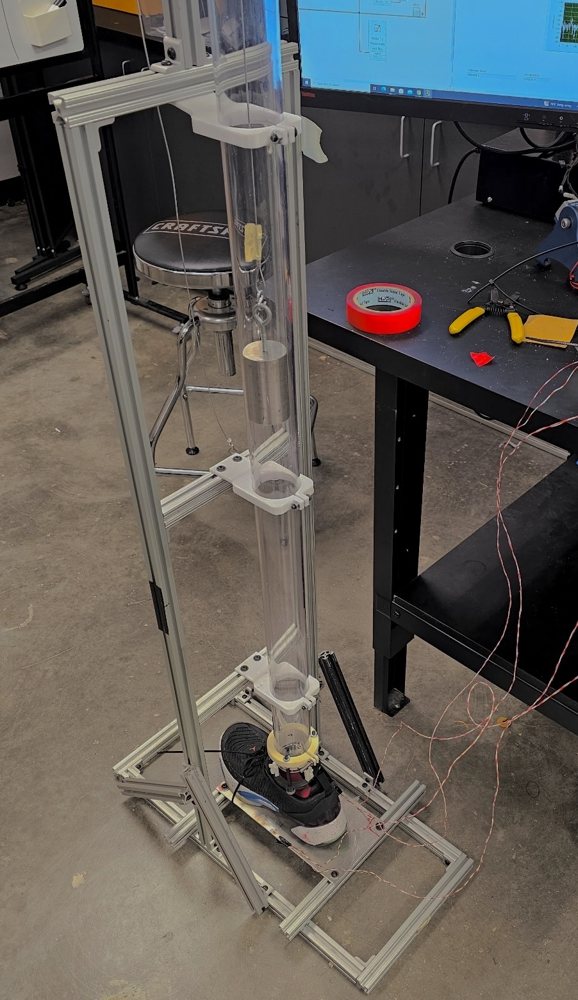
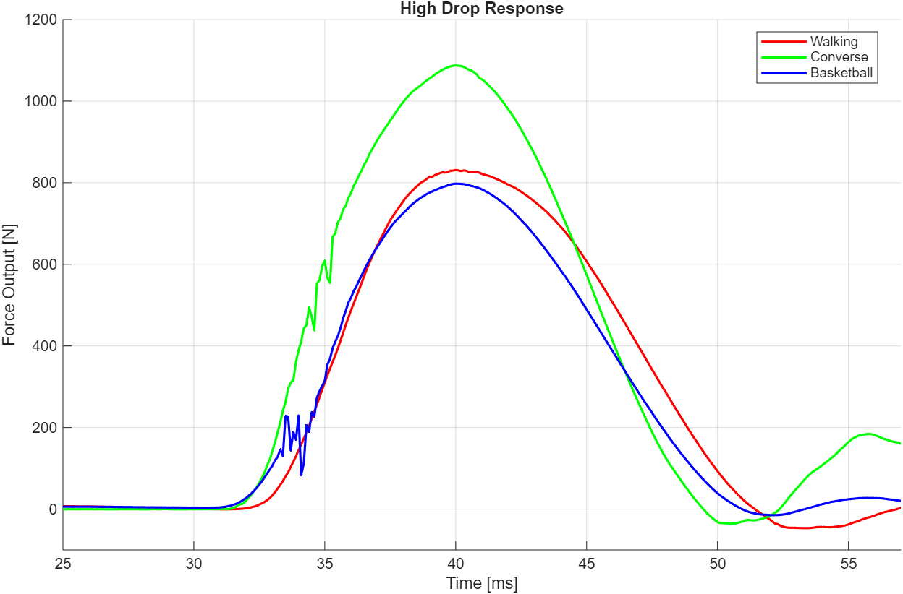
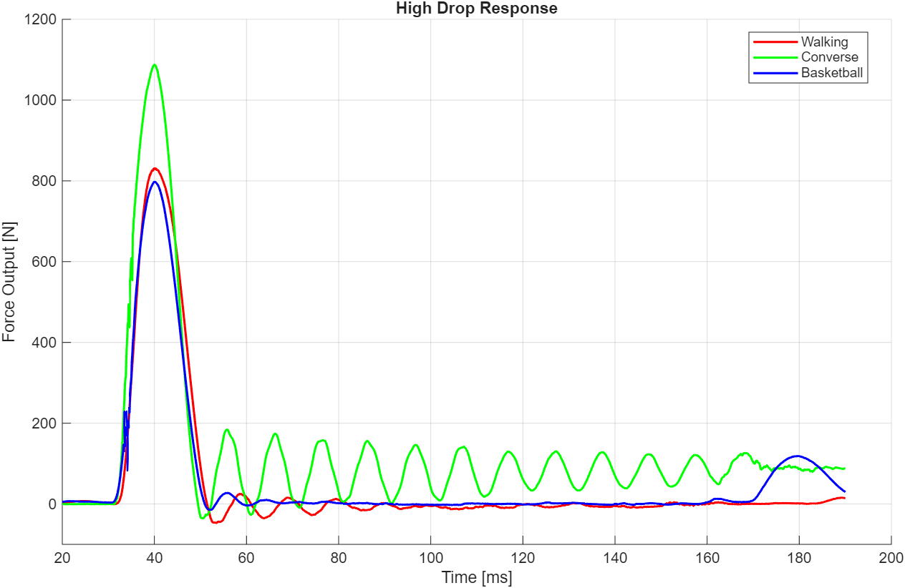

Overview
The class final project was open-ended: measure anything in the world with the sensors we'd learned. Motivated by basketball and ACL injuries, my team of three asked how effective shoe cushioning actually is at reducing the load that reaches the body. I designed the force plate that made the measurement possible — for $40, on a one-week lead time.
Requirements
The plan was to drop a known mass from a known height onto a shoe and measure the force transmitted through it. We had a drop tower from a professor; what we needed was a way to measure force underneath it. Project constraints:
- Fit the existing drop tower
- $50 budget
- One-week lead time
Which set the load cell requirements:
- Millivolt precision (<0.1 mV) — the strains involved are small
- Survive the yield limit of the impacts (<15 J)
- Millisecond resolution (>1 kHz) — impacts are fast
Trade Study
Three ways to measure effectiveness: an accelerometer on the drop mass, a commercial load cell, or a custom one. Commercial load cells in the range we needed ran about $500 — ten times the budget. An accelerometer measures the wrong side of the shoe. So we built our own.
Load Cell Design
A 6" × 12" × 0.125" aluminum plate from McMaster-Carr ($20, two-day lead) instrumented with four in-lab strain gauges in a full Wheatstone bridge, placed to read bending strain at the midspan. The thickness was the design variable: thin enough to deflect measurably under the lightest drop, thick enough not to yield under the heaviest.
Hand calculations and FEA on the plate bounded the expected bending strain between 1.1 × 10⁻⁵ and 3.2 × 10⁻⁵, which through the bridge gave a minimum output around 0.1 mV — comfortably above the NI-9218's 0.3 µV precision. The local machine shop cut the plate and the whole load cell came in at $40.
Calibration against known masses from 0 to 8.6 kg produced a linear force–voltage relationship (R² ≈ 0.99) with a constant of 156 ± 5 N/mV.

Test Matrix
Three shoes — Converse, walking shoes, and basketball shoes — dropped on from three heights (5.0, 7.5, and 10 J), three times each to average. A MATLAB script I wrote aligned and parsed the runs, overlaid them for comparison, and computed peak force and impulse transmission for each.
Results
Impact Attenuation
More cushioning reduced both peak force and impulse. Converse produced the highest loads at every energy level; basketball shoes dissipated energy best at high impact energies.
At the highest drop (9.95 J):
- Converse: 10.98 N·s impulse
- Walking shoe: 9.16 N·s
- Basketball shoe: 8.25 N·s
That's a 25% reduction in transmitted impulse from the minimal-cushion to the high-cushion design — equivalently, the Converse transmitted 33% more. The gap grew with impact energy: 6%, 19%, and 33% across the three drop heights.

Transient Response
Time-domain traces showed distinct damping behavior:
- Converse: large oscillations, poor damping
- Walking shoes: moderate damping
- Basketball shoes: rapid energy dissipation

The Plate Yielded — and Why
On the highest-energy Converse drop, the aluminum plate permanently deformed. The static analysis predicted a maximum bending stress of 161 MPa under the 1090 N peak load, which is fine for 6061-T6 (yield 241 MPa). But the sheet we bought was unmarked. If it was 3003 — yield 114 MPa — it was always going to fail at that energy. Two lessons from one bent plate: verify the alloy you actually have, and don't size a dynamic test with a static analysis.
Lessons Learned
- A full Wheatstone bridge was probably overkill — a half bridge would have met the precision requirement with less wiring
- Dynamic tests need dynamic analysis; static sizing under-predicted the plate's response
- Calculate the yield stress of the plate up front, and know what alloy it is
- Aligning and parsing the raw data was more work than expected — plan the processing pipeline before testing
- Impulse is a useful metric for injury-risk comparisons, and poor damping shifts load into the structure underneath